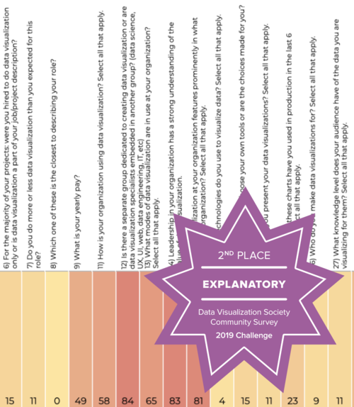

The task was to visualise data from the Annual Data Visualization Community Survey for 2019 which has responses to 50+ questions and was taken by over 1,350 people.
My entry aimed to understand respondents' trends of skipping answers in a survey. It explores the possibilities and limitations of Google Sheets to create an interactive experience.
View visualisationPlease view this on a desktop since the visualisation is made in Google Sheets.
Please view this on a desktop since the visualisation is made in Google Sheets.